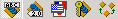

.
.See also: How to view assembly dependencies?
See also: How to import a signed assembly to the Eiffel assembly cache?
This tool allows to import assemblies from the General Assembly Cache into the Eiffel Assembly Cache. Although it looks similar to the Imported Assembly Viewer, it lists the assemblies registered into the General Assembly Cache instead of the assemblies imported into the Eiffel Assembly Cache.
See also: How to import a signed assembly to the Eiffel assembly cache?
The first five items command which columns are displayed in the table. They correspond respectively to the first five toolbar buttons .
By default, only the assembly name and the path to the corresponding Eiffel sources are visible. You can also choose to view the assembly version, culture and public key or assembly dependencies.
Note: Upon clicking on Show dependencies, a new column is added to the initial table which only show the names of the dependencies. To obtain additional information, select Dependency Viewer in the Tools menu.
.See also: How to view assembly dependencies?
See also: How to import a signed assembly to the Eiffel assembly cache?